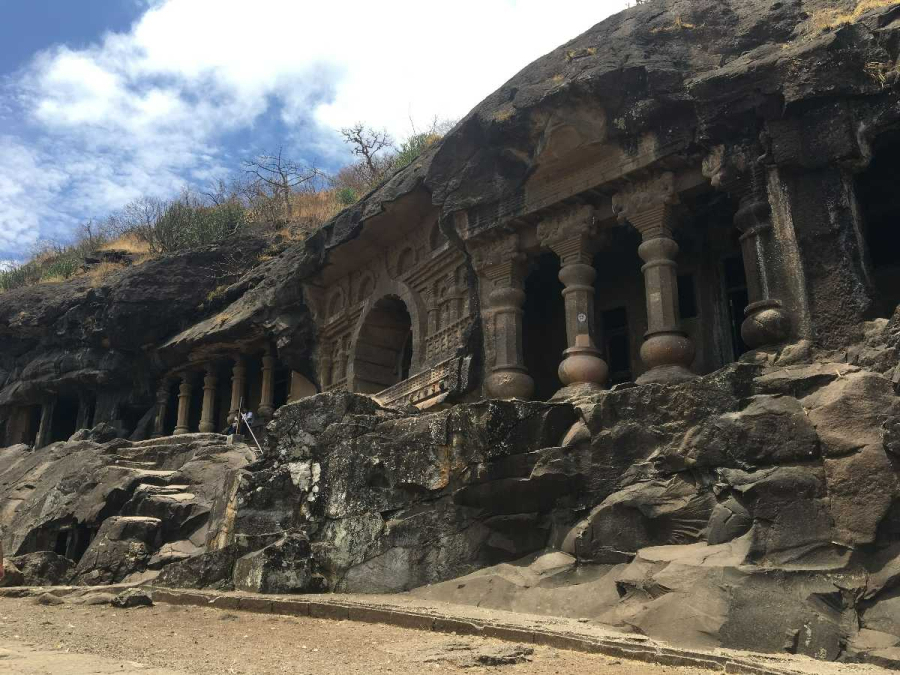
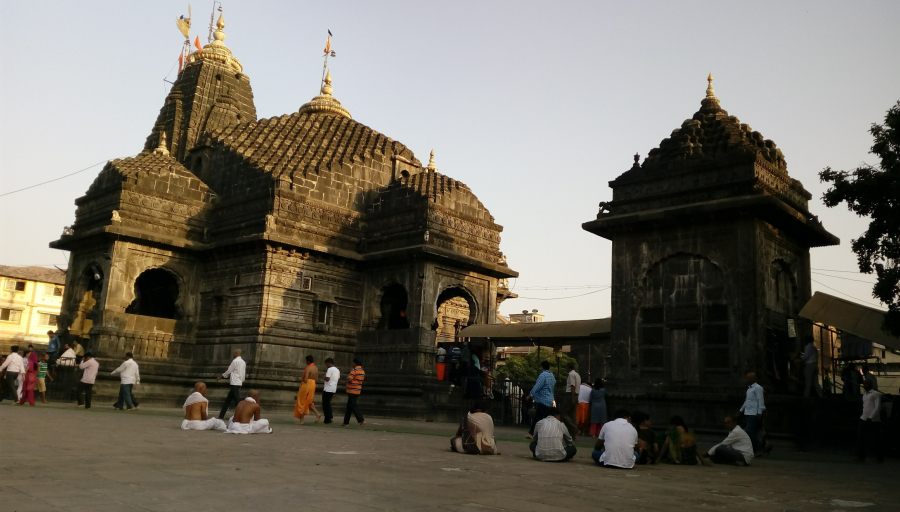
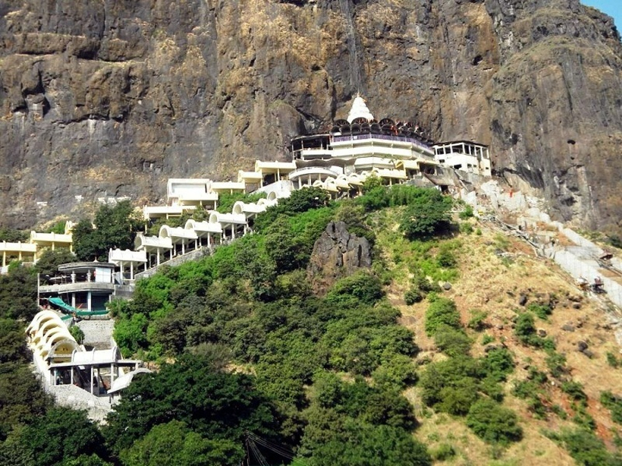
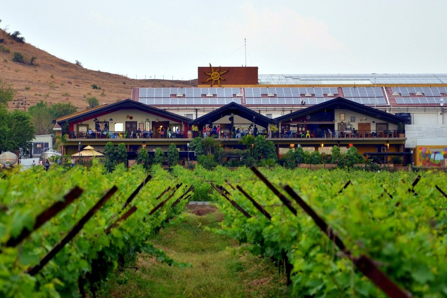
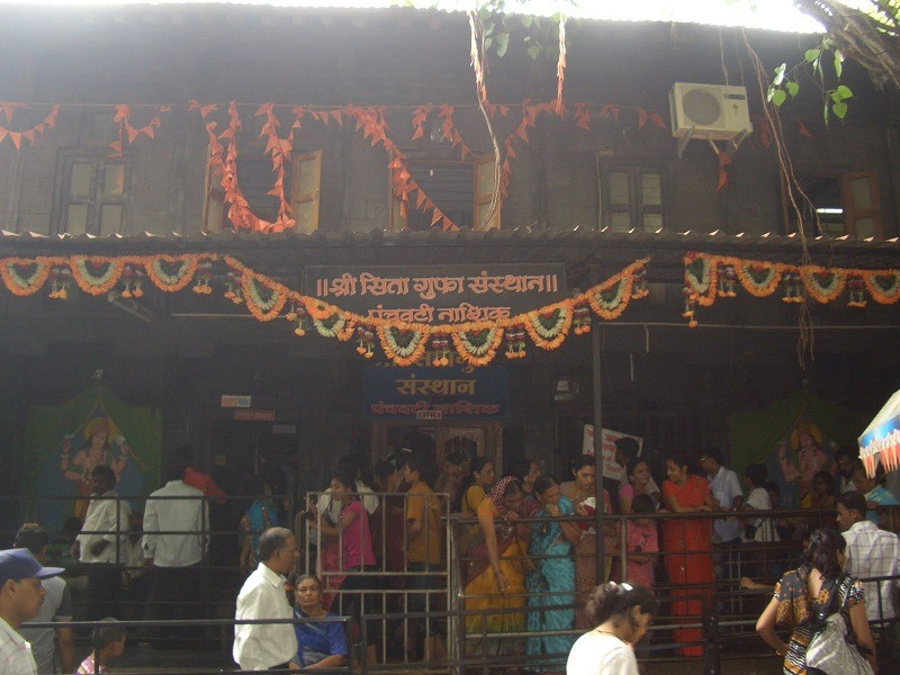
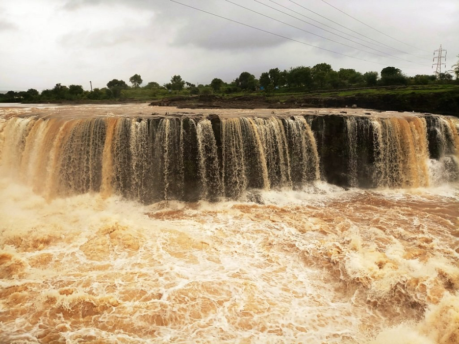

The City with Holy Spirit, Nashik.
Nashik is an ancient holy city in Maharashtra, a state in western India. It’s known for its links to the “Ramayana” epic poem. On the Godavari River is Panchavati, a temple complex. Nearby, Lord Rama was thought to have bathed at Ram Kund water tank, today attended by Hindu devotees. Shri Kalaram Sansthan Mandir is an ancient shrine to Rama, while Rama and Sita are said to have worshipped at Sita Gufaa caves.
Pandav Leni Caves
These caves are located on hill at the outskirts of Nashik city on Nashik Mumbai road (NH3) Dadasaheb Phalke smarak is erected at the foots of this hill. These caves are built on the Trirasmi hill about 3004 feet above the sea. These caves are the group of old Buddhist caves (B.C.250- A.D.600). Their northern frontage saves them from the sun and the south-west rains hence much of the carved work and many long and most valuable inscriptions have passed fresh amd unharmed through 1500-2000 years.. All the caves are great examples of intricate carving and craftsmanship but the 3, 10, 18 caves are a must see for their outstanding sculptures.
Trimbakeshwar Jyotirling Mandir
Trimbakeshwar town is an ancient Hindu Pilgrim centre located at the source of the Godavari River, the longest river in peninsular India. Trimbakeshwar is abode of one of the twelve Jyotirlingas. Mahashivratri, Palkhi Sohala, and Kumbh Mela are the main festivals of the Trimbakeshwar Temple.
The present Trimbakeshwar temple was constructed by third Peshwa Balaji Bajirao (1740-1760) on the site of an old temple. There are entry gates on all the four sides, viz. East, West, South and North. As per spiritual conceptions the direction East denotes the beginning, West denotes maturity, south denotes fulfillment or completion and the North stands for the revelation.
Shree Saptashrungi Nivasini Devi Trust
Saptashrungi is a site of Hindu pilgrimage situated 60 kilometres (37 mi) from Nashik in Indian state of Maharashtra. According to Hindu traditions, the goddess Saptashrungi Nivasini dwells within the seven mountain peaks. (Sapta means seven and shrung means peaks.) It is located in Nanduri, Kalwan taluka, a small village near Nashik in India. The Marathas and some Hindu tribes worship the goddess from a long time and some worship as their kuldaivat.
There are 510 steps to climb the gad. Devotees visit this place in large numbers every day. he temple is also known popularly as one of the "three and half Shakti Peethas" of Maharashtra. The temple is also one among the 51 Shakti Peethas located on the Indian subcontinent and is a location where one of Sati's (wife of Lord Shiva) limbs, her right arm is reported to have fallen. Its half shaktipeeth among three and half shaktipeeth of Maharashtra. The route from Nashik and Vani via Dindori is 39 kilometres (24 mi) and via Pimpalgaon Baswant is 51 kilometres (32 mi). The route via Nadurgaon village is the easiest and is 14 kilometres (8.7 mi) from Vani.
Sula Vineyards
Sula Vineyards is a winery and vineyard located in the Nashik region of western India, 180 km northeast of Mumbai. It was founded by Rajeev Samant in 1999.Sula has grown to be India’s largest and most awarded wine brand. Sula introduced grape varietals such as Chenin blanc, Sauvignon blanc, Riesling and Zinfandel in India and is the leading player in the Indian wine industry.
Sula also imports and distributes leading international wines and spirits such as Le Grand Noir, Torres, Trapiche, Hardy's, Bouchard Aîné et Fils, Cap Royal, Cono Sur, Gruppo Italiano Vini, Beluga Vodka, Asahi and many more! Sula exports many of its wines to over 30 countries and includes countries like Singapore, Australia, Italy, France to name a few.
Sita Gufa
The Sita Gufa, also spelt as Sita Gumpha or Sita Gupha, is an important location associated with the Ramayana, an epic tale crucial to the narrative of modern Hinduism. It essentially translates to the Cave of Sita, who was the wife of Rama, the protagonist of Ramayana and heir apparent to the throne of Ayodhya. Rama is sentenced to a 14-year exile into the jungles, and he eventually spends many years in Panchavati, a region in what is now Nashik, Maharashtra.
The cave today is a popular place for pilgrims who travel to Panchavati to get closer to the legend of the Ramayana. Located near the five sacred banyan trees in the area, you can enter the cave through the narrow staircase leading into it. Once inside, you will find an idol of Sita along with Rama and his brother, Lakshman. To the left, there is a cave with a Shiva Linga.
Someshwar Water Fall
Someshwar Waterfall Located at a panoramic place, Dudhsagar Waterfalls in Someshwar is regarded as one among the best in the entire world itself. This cascading falls is a favourite picnic spot in the city, which offers picture book scenery. The waterfalls reach its zenith during monsoon season when the cascade displays plenty of water in it.
The 10-meter stretch of this cascade is often crowed with people. Another remarkable fact about this lovely falls is its creamy white water that got its name Dudhsagar. Carved steps on the rocks makes access to the top of this lovely spot easy.
Video